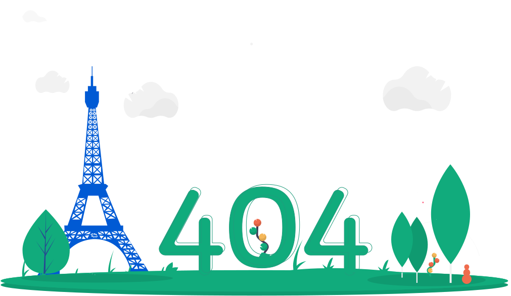

Page not found
Oops! Looks like you followed a bad link. If you think this is a problem with us, please tell us.
Go back homeOops! Looks like you followed a bad link. If you think this is a problem with us, please tell us.
Go back home